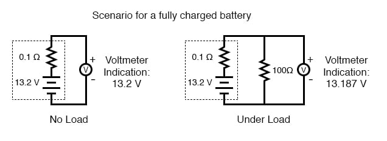
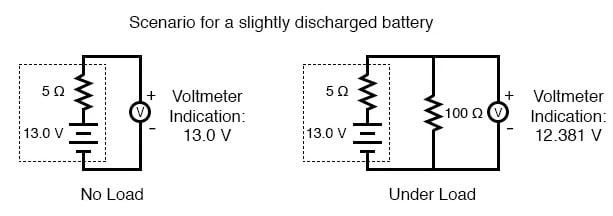
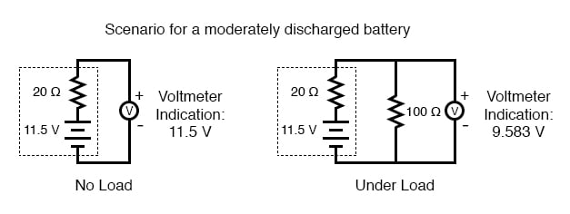
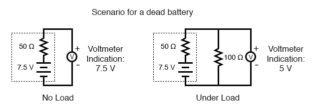
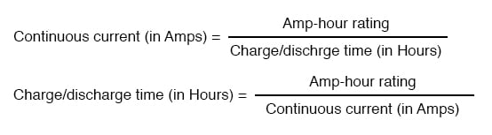

Because batteries create current flow in a circuit by exchanging electrons in ionic chemical reactions, and there is a limited number of molecules in any charged battery available to react, there must be a limited amount of total charge that any battery can motivate through a circuit before its energy reserves are exhausted. Battery capacity could be measured in terms of a total number of electrons, but this would be a huge number. We could use the unit of the coulomb (equal to 6.25 x 1018 electrons, or 6,250,000,000,000,000,000 electrons) to make the quantities more practical to work with, but instead a new unit, the amp-hour, was made for this purpose. Since 1 amp is actually a flow rate of 1 coulomb of electrons per second, and there are 3600 seconds in an hour, we can state a direct proportion between coulombs and amp-hours: 1 amp-hour = 3600 coulombs. Why make up a new unit when an old would have done just fine? To make your lives as students and technicians more difficult, of course!
A battery with a capacity of 1 amp-hour should be able to continuously supply current of 1 amp to a load for exactly 1 hour, or 2 amps for 1/2 hour, or 1/3 amp for 3 hours, etc., before becoming completely discharged. In an ideal battery, this relationship between continuous current and discharge time is stable and absolute, but real batteries don’t behave exactly as this simple linear formula would indicate. Therefore, when amp-hour capacity is given for a battery, it is specified at either a given current, given time, or assumed to be rated for a time period of 8 hours (if no limiting factor is given).
For example, an average automotive battery might have a capacity of about 70 amp-hours, specified at a current of 3.5 amps. This means that the amount of time this battery could continuously supply current of 3.5 amps to a load would be 20 hours (70 amp-hours / 3.5 amps). But let’s suppose that a lower-resistance load was connected to that battery, drawing 70 amps continuously. Our amp-hour equation tells us that the battery should hold out for exactly 1 hour (70 amp-hours / 70 amps), but this might not be true in real life. With higher currents, the battery will dissipate more heat across its internal resistance, which has the effect of altering the chemical reactions taking place within. Chances are, the battery would fully discharge some time before the calculated time of 1 hour under this greater load.
Conversely, if a very light load (1 mA) were to be connected to the battery, our equation would tell us that the battery should provide power for 70,000 hours, or just under 8 years (70 amp-hours / 1 milliamp), but the odds are that much of the chemical energy in a real battery would have been drained due to other factors (evaporation of electrolyte, deterioration of electrodes, leakage current within battery) long before 8 years had elapsed. Therefore, we must take the amp-hour relationship as being an ideal approximation of battery life, the amp-hour rating trusted only near the specified current or timespan given by the manufacturer. Some manufacturers will provide amp-hour derating factors specifying reductions in total capacity at different levels of current and/or temperature.
For secondary cells, the amp-hour rating provides a rule for necessary charging time at any given level of charge current. For example, the 70 amp-hour automotive battery in the previous example should take 10 hours to charge from a fully-discharged state at a constant charging current of 7 amps (70 amp-hours / 7 amps).
Approximate amp-hour capacities of some common batteries are given here:
As a battery discharges, not only does it diminish its internal store of energy, but its internal resistance also increases (as the electrolyte becomes less and less conductive), and its open-circuit cell voltage decreases (as the chemicals become more and more dilute). The most deceptive change that a discharging battery exhibit is increased resistance. The best check for a battery’s condition is a voltage measurement under load, while the battery is supplying a substantial current through a circuit. Otherwise, a simple voltmeter check across the terminals may falsely indicate a healthy battery (adequate voltage) even though the internal resistance has increased considerably. What constitutes a “substantial current” is determined by the battery’s design parameters. A voltmeter check to reveal too low of a voltage, of course, would positively indicate a discharged battery:
Fully charged battery:

Now, if the battery discharges a bit . . .

. . . and discharges a bit further . . .

. . . and a bit further until its dead.

Notice how much better the battery’s true condition is revealed when its voltage is checked under load as opposed to without a load. Does this mean that it’s pointless to check a battery with just a voltmeter (no load)? Well, no. If a simple voltmeter check reveals only 7.5 volts for a 13.2-volt battery, then you know without a doubt that it’s dead. However, if the voltmeter were to indicate 12.5 volts, it may be near full charge or somewhat depleted—you couldn’t tell without a load check. Bear in mind also that the resistance used to place a battery under load must be rated for the amount of power expected to be dissipated. For checking large batteries such as an automobile (12-volt nominal) lead-acid battery, this may mean a resistor with a power rating of several hundred watts.
REVIEW:
